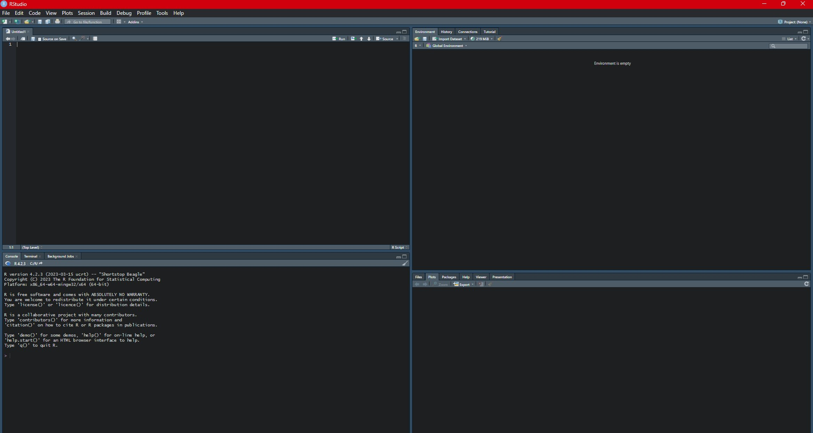

Installing R and RStudio: Prerquisites
New to R and RStudio? No problem! This detailed tutorial will help you install and verify these powerful tools, preparing you to dive into the world of Bayesian econometrics.
1. Download and Install R
1.1 Go to the Comprehensive R Archive Network (CRAN) website.
1.2 Click on the "Download R for (Your Operating System)" link (Windows, Mac, or Linux).
1.3 Follow the on-screen instructions to download and install R.
2. Download and Install RStudio
2.1 Visit the RStudio download page.
2.2 Choose the "RStudio Desktop" version.
2.3 Download the installer for your operating system.
2.4 Run the installer and follow the prompts to install RStudio.
3. Verify Installation
3.1 Open RStudio.
3.2 In the "Console" pane (usually at the bottom left), type the following and press Enter:
3.2 In the "Console" pane (usually at the bottom left), type the following and press Enter:
version
3.3 You should see information about the installed versions of R and RStudio.

Troubleshooting Tips
- If you encounter any issues during installation, consult the CRAN FAQ or the RStudio Support page.
- Make sure you have administrator privileges on your computer to install software.